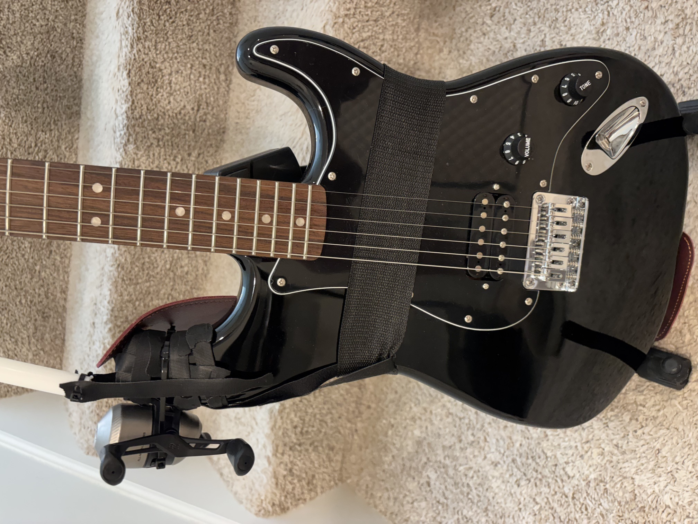

The first physical build
A Strat-style guitar, horn cradle and rod tip.
The build
The first documented build used a Squier Sonic Strat. The reel assembly sat at the guitar horn, and PEX and a rod tip were used to route the line.

What came next
The horn mount and the path of the line became separate areas to refine. Add the dated test record when the build log is reviewed.